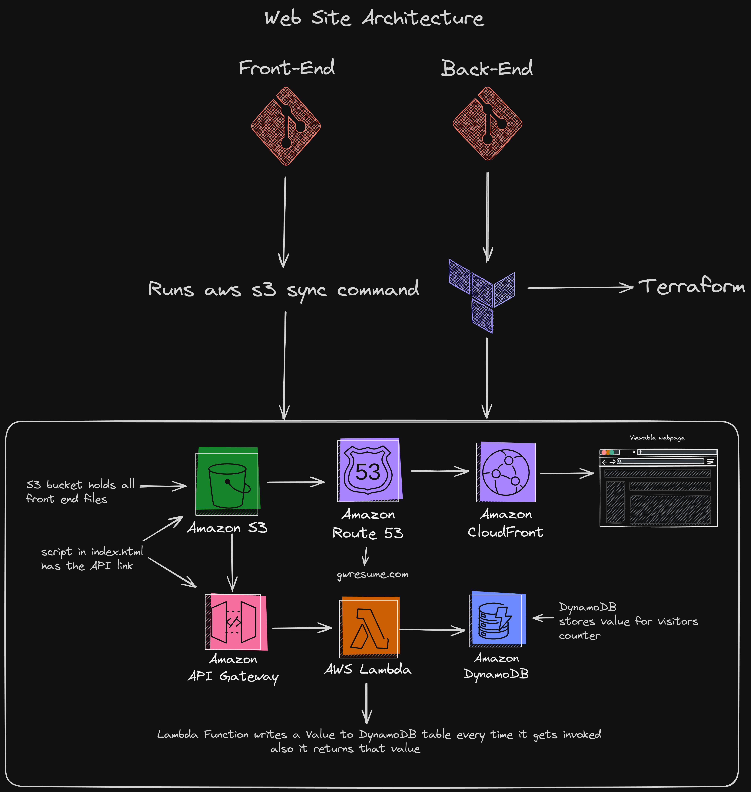

George Wettlaufer IV
Pennsylvania, US
570-690-8249
Certifications


Skills
- Amazon Web Services
- Strong Work ethic
- Dependability
- Willingness to learn
- Self-motivated
- Terraform
- Computer proficiency
- Adaptability
- Linux
- Git
- Golang
Hobbies
- Programming
- Running
- Video Games
- Building PCs
Professional Summary
Dedicated and enthusiastic junior professional with a keen interest in AWS technologies.
Eager to apply my foundational knowledge of cloud computing and AWS services to contribute effectively to
projects and initiatives.
Possessing a solid understanding of key AWS services such as EC2, S3, and Lambda,
along with a willingness to continuously expand my skill set through hands-on experience and learning
opportunities.
Committed to delivering high-quality solutions while collaborating closely with team members to achieve
common goals.
Ready to leverage my passion for AWS to drive innovation and make meaningful contributions to the
organization's success.
Projects
Website using AWS/Cloud Resume Challenge
My AWS architecture leverages various services to host a static website, manage DNS, improve content delivery performance, automate infrastructure provisioning, execute serverless backend logic, create APIs, and store data in a scalable database.
Education
Sullivan County High School
Graduated 06/11
boot.dev
I obtained certificates in Golang, Docker, Kubernetes, and CI/CD. These courses provided me with comprehensive knowledge and hands-on experience in modern software development practices and tools. Through rigorous training and practical exercises, I gained proficiency in building scalable applications, containerization, orchestration, and implementing efficient CI/CD pipelines. These certifications validate my expertise and commitment to staying current with industry trends in software development and deployment.
Work Experience
Maintenance/Security/Tyler Memorial Hospital
03/2021 - 06/2022
Logging Equipment Operator / Jeffery A Wettlaufer Log Trucking
01/2015 to 09/2020
Logging Equipment Operator / George C Wettlaufer III Logging LLC
06/2011 to 08/2014